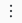

Create and manage private exchanges in Databricks Marketplace
This article is intended for data providers and describes how to create and manage private exchanges in Databricks Marketplace. Private exchanges enable you to share data products with a defined group of invited consumers. Private exchange listings do not appear in the public marketplace.
What is a private exchange?
A private exchange allows you to make certain data products discoverable only to a specified group of consumers in Databricks Marketplace. Like Delta Sharing, upon which Databricks Marketplace is built, private exchanges give you the ability to share data securely and privately with select recipients. Unlike Delta Sharing, private exchanges have the additional advantage of making data products discoverable by members before the data product is shared, so consumers are aware that those data products are available to request. Databricks Marketplace private exchanges also provide consumers with a storefront interface for requesting and accessing data products that might be easier to use than Delta Sharing on its own.
What is a private listing?
Listings are defined as public or private. To share a listing in a private exchange, it must be defined as private. You can add existing private listings to your exchange, and you can create new private listings, assigning them to the exchange when you create the listing. See Create listings.
You can share free listings that are available instantly or listings that require your approval before the member can access them. You can create new private listings and add them to your exchange at any time. You can also edit a public listing to make it private. See Create listings.
Before you begin
To create and manage private exchanges, you need the Marketplace admin role.
Private exchange members must be Databricks customers and must have access to a workspace that is attached to a Unity Catalog metastore.
When you add a member to your private exchange, you must enter their metastore’s sharing identifier.
The sharing identifier is a string consisting of the metastore’s cloud, region, and UUID (the unique identifier for the metastore), in the format
<cloud>:<region>:<uuid>. For example,aws:eu-west-1:b0c978c8-3e68-4cdf-94af-d05c120ed1ef.To get the sharing identifier, reach out to your contact at the member organization. You might need to tell them how to get the sharing identifier. For instructions, see Step 1: Request the recipient’s sharing identifier. You can also point them to step 1 of Get access in the Databricks-to-Databricks model for instructions.
Set up a private exchange
You create the private exchange using the provider console in Databricks Marketplace. You can add members and listings when you create the exchange or after.
Permission required: Marketplace admin role.
To create a private exchange:
Log into your Databricks workspace.
In the sidebar, click
 Marketplace.
Marketplace.On the upper-right corner of the Marketplace page, click Provider console.
On the Exchanges tab in the provider console, click Create exchange.
On the Create exchange dialog, enter the name of your exchange and click Create.
Use a human-friendly name that helps you and other users who are managing exchanges recognize the purpose of the exchange.
On the Exchanges tab, find the exchange and click the name.
Add the members you want to share with.
On the Members tab, click Add member.
On the dialog, add a human-readable name for the member and enter the Sharing identifier.
To learn how to get the sharing identifier from the member organization, see Before you begin.
Click Add member.
Add the listings you want to share.
On the Listings tab, click Add listing.
On the dialog, select one of the existing private listings from the drop-down list and click Add listing.
You can also create a new private listing or edit a public listing to make it private.
Click create a new listing to go to the New listing page.
When you create the listing, select the Private exchange option and select the exchange from the drop-down list. See Create listings.
Edit members or remove them from a private exchange
Permission required: Marketplace admin role
To edit or remove a member:
Log into your Databricks workspace.
In the sidebar, click
Marketplace.On the upper-right corner of the Marketplace page, click Provider console.
On the Exchanges tab in the provider console, find and click the exchange name.
On the Members tab, find the member, and click the  kebab menu (also known as the three-dot menu) at the end of the member row.
To edit the member, select Edit. You can update both the member name and sharing identifier.
To remove the member, select Remove on the kebab menu.
Remove listings from a private exchange
Permission required: Marketplace admin role.
To remove a listing from an exchange:
Log into your Databricks workspace.
In the sidebar, click
Marketplace.On the upper-right corner of the Marketplace page, click Provider console.
On the Exchanges tab in the provider console, find and click the exchange name.
On the Listings tab, find the listing, click the kebab menu at the far right, and select Remove.
On the confirmation dialog, click Remove.
You can also remove the link between a listing and an exchange by editing the listing and removing the exchange from the field under Private exchange.
Manage member requests for data products
You manage member requests for data products in private exchanges the same way that you do for data products in the public marketplace. See Manage requests for your data product in Databricks Marketplace.